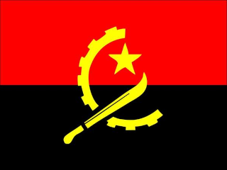
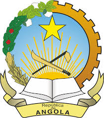

A Assembleia Nacional aprova por mandato do povo, nos termos das disposicões combinadas do nº 3 do artigo 18º da alínea m, do artigo 164º e da alínea d, do nº 2 do artigo 16bº, todos da Constituição da República de Angola, a Lei 14/18, que estavelece a deferência e o uso da Bandeira Nacional, da Insígnia da Repúublica e do Hino Nacional.
A Bandeira Nacional foi vista e aprovada pela Assembleia Constituinte, aos 21 de Janeiro de 2010, e na sequência do Acordão do Tribunal Constitucional nº 111/2010 de 30 de Janeiro, aos 3 de Fevereiro de 2010.
A Bandeira Nacional tem duas cores dispostas em duas faixar horizontais. A faixa superior é de cor vermelho-rubro e a inferior de cor preta e representam:

No centro, figura uma composição constituída por uma seccção de uma roda dentada, símbolodos trabalhadores e da produção industrial, por uma catana, símbolo dos camposeses, da produção agrícola e da luta armada e por uma estrela, símbolo da solidariedade internacional e do progresso.
A roda dentada, a catana e a estrela são de cor amarela, que representa a riqueza do País.

A Insígnia Nacional foi vista e aprovada pela Assembleia Constituinte, aos 21 de Janeiro de 2010, e na sequência do Acordão do Tribunal Constitucional nº 111/2010 de 30 de Janeiro, aos 3 de Fevereiro de 2010.
A Insígnia da República de Angola é formada por uma seccção de uma roda dentada e por uma ramagem de milho, café e algodão, representando, respectivamente, os trabalhadores e a produção industrial, os camposeses e a produção agrícola.
Na base do conjunto, existe um livro aberto, símbolo da educação e cultura, e o sol nadcente, significando o novo País. Ao centro está colocada uma catana e uma enxada, simbolizando o trabalho e o início da luta armada. Ao cimo figura a estrela, símbolo da solidariedade internacional e do progresso.
Na parte inferior do emblema está colocada uma faiza dourada com a inscrição República de Angola.
Ó Pátria nunca mais esqueceremos
Os heróis do 4 de Fevereiro
Ó Pátria nos saudamos os teus filhos
Tombados pela nossa independência
Honramos o passado, a nossa história
Construindo no trabalho o homem novo
Honramos o passado, a nossa história
Construindo no trabalho o homem novo
Angola avante, revolução
Pelo poder popular!
Pátria unida, liberdade
Um só povo uma só Nação!
Angola avante, revolução
Pelo poder popular!
Pátria unida, liberdade
Um só povo uma só Nação!
Levantemos nossas vozes libertadas
Para a glória dos povos africanos
Marchemos combatentes angolanos
Solidários com os povos oprimidos
Orgulhosos lutaremos pela paz
Com as forças progressistas do mundo
Orgulhosos lutaremos pela paz
Com as forças progressistas do mundo
Angola avante, revolução
Pelo poder popular!
Pátria unida, liberdade
Um só povo uma só Nação!
Angola avante, revolução
Pelo poder popular!
Pátria unida, liberdade
Um só povo uma só Nação!